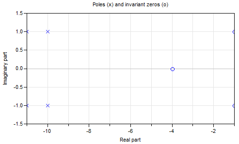

Package of utility functions (usually not of interest for the user)
This package contains auxiliary functions used for demonstration of plot functions in package Examples.
Extends from Modelica.Icons.Package (Icon for standard packages).
| Name | Description |
|---|---|
| Return a damped sine chracteristic | |
Return a damped sine chracteristic
(x,y) = Plot.Examples.Utilities.dampedSine(freqHz, damping, nPeriod=5, nPoints=500);
This function computes nPoints points x[i], y[i] of a sine-curve
y = exp(-x*damping)*sin(2*pi*freqHz*x)
where the abszissa values x[i] are in the range 0 .. nPeriod*T, where T = 1/freqHz is the period of the sine wave.
With the default options and freqHz=2 Hz and damping=0.8, the following curve is generated:

| Name | Description |
|---|---|
| freqHz | Frequency of sine wave [Hz] |
| damping | Damping coefficient of sine wave [s-1] |
| nPeriod | Number of periods to show |
| nPoints | Number of points |
| Name | Description |
|---|---|
| x[nPoints] | |
| y[nPoints] |
 Modelica_LinearSystems2.Utilities.Plot.Examples.Utilities.ControlledSISO1
Modelica_LinearSystems2.Utilities.Plot.Examples.Utilities.ControlledSISO1Utility model in order to demonstrate the plotting of a root locus:

This model consists of a linear, time invariant single-input, single-output plant "zerosAndPoles" that is controlled by a P-Controller with a constant gain k. The pole/zero pattern of the plant is shown in the next figure:

Extends from Modelica.Blocks.Interfaces.SISO (Single Input Single Output continuous control block).
| Name | Description |
|---|---|
| k |
| Name | Description |
|---|---|
| u | Connector of Real input signal |
| y | Connector of Real output signal |
Modelica_LinearSystems2.Utilities.Plot.Examples.Utilities.ControlledSISO2Utility model in order to demonstrate the plotting of a root locus:
This model consists of a linear, time invariant single-input, single-output plant "zerosAndPoles"
that is controlled by a P-Controller with a constant gain k. The pole/zero pattern of the plant is shown in the next figure:

Extends from Modelica.Blocks.Interfaces.SISO (Single Input Single Output continuous control block).
| Name | Description |
|---|---|
| k |
| Name | Description |
|---|---|
| u | Connector of Real input signal |
| y | Connector of Real output signal |